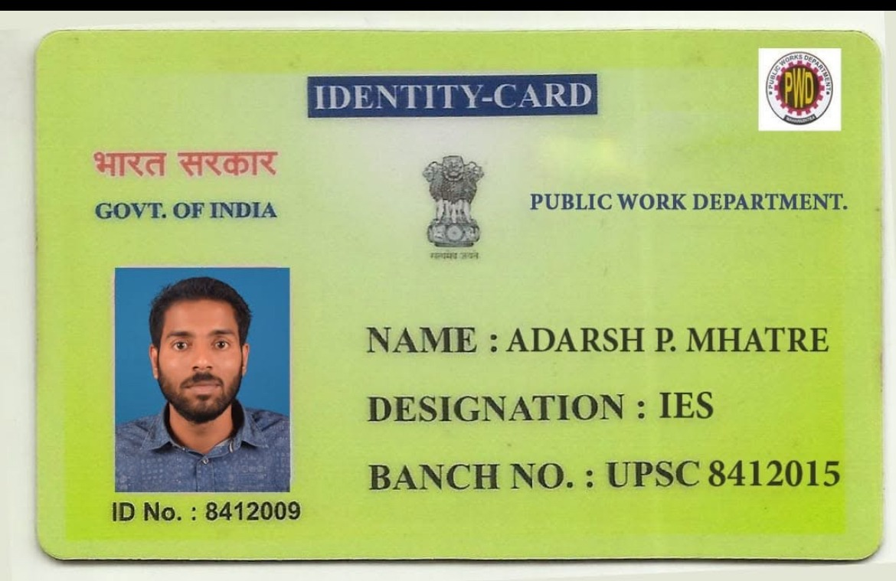
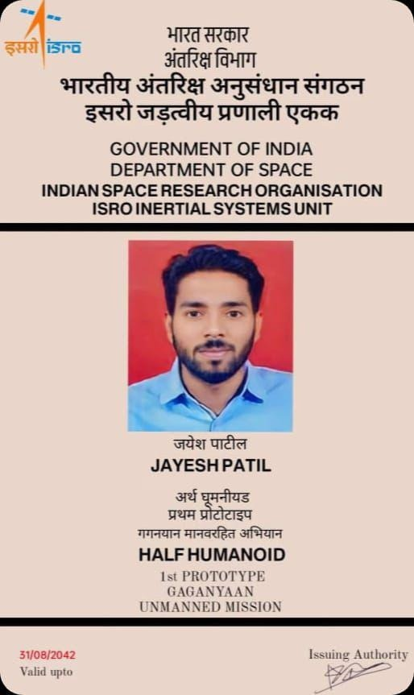
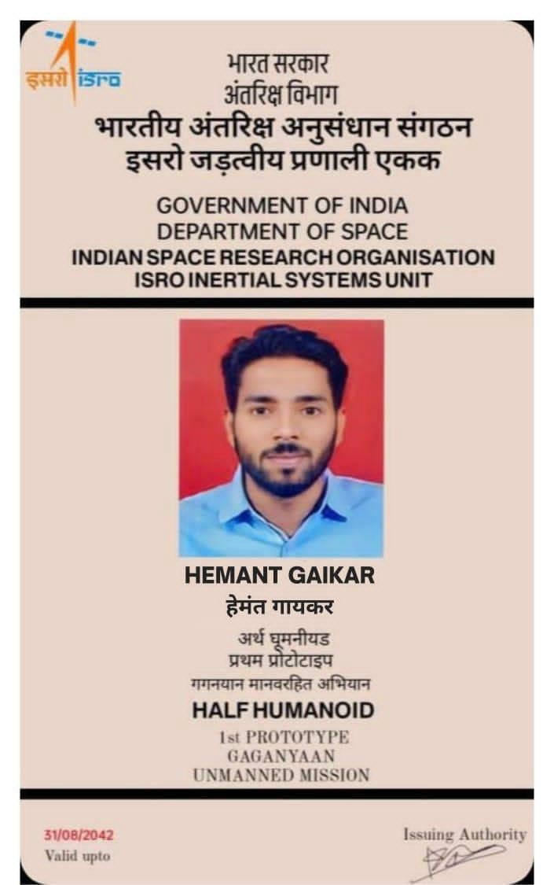
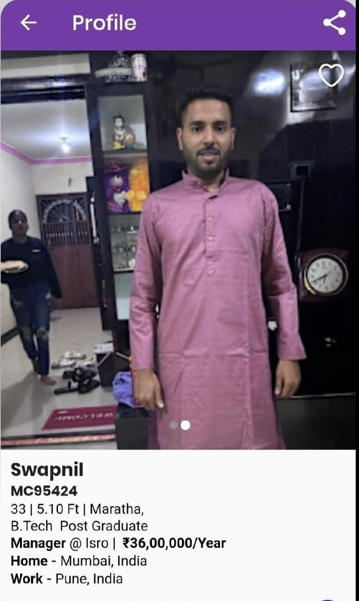
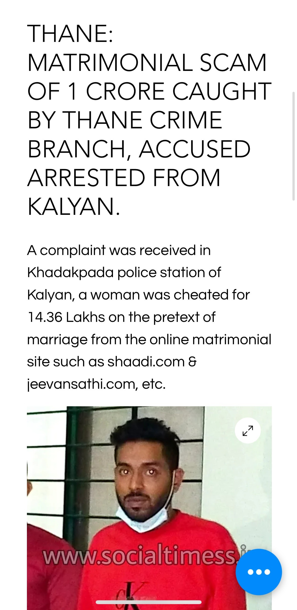
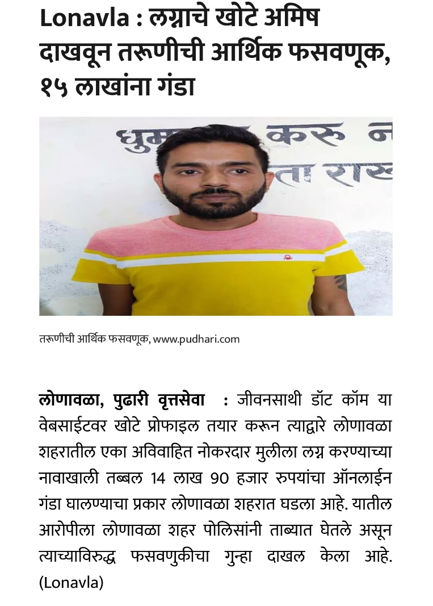
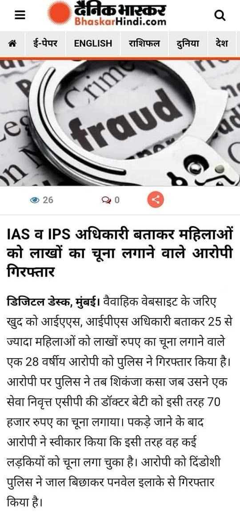
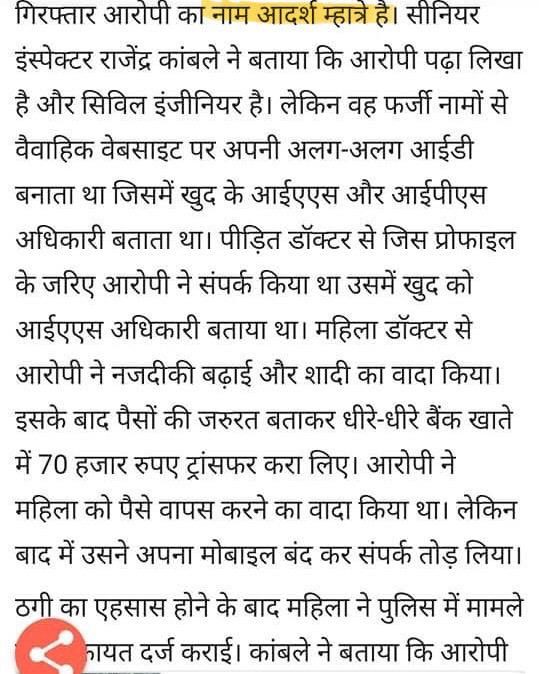
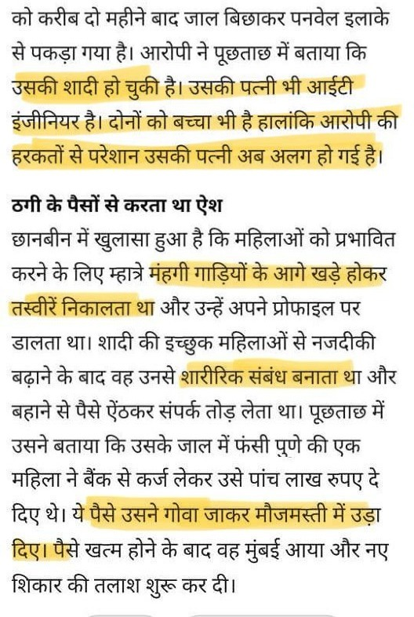

Fake ID and Documents










Matrimonial Fraudster Impersonating as ISRO Scientist & Government Officer Exploiting Women via Matrimonial Sites
This individual, Adarsh Prashant Mhatre, is a shameless, manipulative scammer who has cheated countless women under fake names such as Tanmay Mhatre, Aditya Mhatre, Nahush Mhatre, Jayesh Patil, Jayesh Naik, and Swapnil Warule (and many others) on matrimonial websites like Shaadi.com, Jeevansathi.com, Anuroop Vivah, and Divorcee.com. Despite being arrested multiple times since 2019, he still walks free, openly trapping new victims — a disgraceful failure of the police and judiciary system.
Adarsh Mhatre is from Kegaon-Uran and has lived in Kawade- Alibag and Bhopal. To evade authorities, he constantly changes his location and identity. While he primarily resides in the Pune or Navi Mumbai area, he often travels to meet his family and relatives in Turade, Rasayani and Karanjade, Panvel. Additionally, he is known to visit casinos in Goa. Adarsh Mhatre is a married man with a wife and son.
He is a manipulative scammer who creates fake matrimonial profiles on websites like Shaadi.com, Jeevansathi.com, Divorcee.com and Anuroop Vivah, targeting working women particularly those who are financially independent or divorced. He pretends to be well-settled, working as an ISRO scientist, IAS, or IPS officer.
He love-bombs his victims, showering them with attention and affection to gain their trust quickly. He proposes marriage, claiming he is deeply interested in them. In some cases, he even talks on the phone with the victim's parents and introduces them to his family member or friend to create a false sense of legitimacy. Once he gains their trust, he manipulates them emotionally and financially, insists on physical relationships, and shamelessly demands intimate photos and nudes — later weaponizing these to blackmail women into silence. He has learned and perfected all tactics to manipulate women by faking love, creating an illusion of genuine affection while exploiting them. By putting their dignity at stake, he ensures that many victims, out of shame and fear, never come forward to file complaints.He frequently asks for money, He pressures victims to send money or take instant loans, promising repayment.
His modus operandi is calculated and deceitful: he traps multiple women at the same time, never keeps bank accounts in his own name, and makes victims transfer money into casino accounts, relatives’ accounts, or even other victims’ accounts. He shamelessly runs a Ponzi scheme — using one victim’s money to repay another — keeping the cycle of fraud alive. When suspicions arise, he pretends to return funds, but in reality, it’s always stolen money from his latest target. He keeps victims on hold with fake promises, creating hope that he will return their money.
Importantly, in cases where victims did file official complaints, he cleverly returned partial amounts to weaken the case, escaping serious punishment again and again. This cunning pattern has made him a repeat offender, still free to hunt for new victims under fresh identities.
Reports confirm that he has looted countless women, with amounts ranging from ₹5 lakh to ₹35 lakh each. He is not just a fraud — he is a manipulative, cunning liar, a sexual predator, and a habitual cheater who feeds on women’s trust and dignity. His existence is a menace to society, and every day he remains free is an open mockery of justice.
⚠️ What to Do If You Are a Victim ⚠️
If you have encountered this individual or fallen victim to his scams, do not stay silent. Your silence only allows this scumbag to continue operating freely.
👉 Step 1: Immediately file a cyber complaint by calling 1930 or through the official Cyber Crime Portal (cybercrime.gov.in).
👉 Step 2: Visit your nearest police station to register an FIR.
Filing a cyber complaint is crucial — it increases the chances of recovering your money because this fraudster always tries to repay victims quickly to keep his Ponzi cycle running and avoid escalation. After filing, do not inform him. Stay quiet and focus on recovering whatever is possible from him. Let him learn about it from the account holders themselves.
Victims should also file complaints with the Maharashtra State Commission for Women to ensure stronger action.
Remember: speaking up protects not only you but also future victims. Staying silent only gives this manipulative scammer more power.
This page is dedicated to raising awareness about his fraudulent activities. Stay vigilant and do not fall for his scams!
Disclaimer: All information provided on this page has been sourced from publicly available news articles and from victims who have shared their experiences anonymously. This page is intended solely for raising awareness and educating individuals about fraudulent activities. The creators of this page do not intend to defame or harm anyone’s reputation. If you believe any information is inaccurate, please contact the relevant authorities or news outlets for clarification.